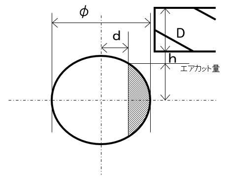
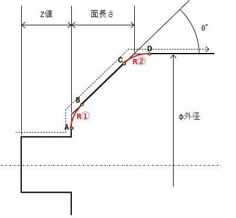

CNC 計算ツール
主軸回転数
面粗度→送り（Ra/Rz）
フライス長さ
角部R 座標
周速度 Vc
(m/min)
材料径 φ
(直径 mm)
計算
※表示は「小数切り捨て（整数）」で出力。計算自体は Math.PI を使用。
表記
Ra（μm）係数32
Rz（μm）/ Excel互換（8則）
Ra（μm）
Rz（μm）
参考換算 k
(Ra ≈ Rz / k)
k=4
k=6
k=7
※Rz→Ra換算は定義が異なるため厳密ではありません。社内基準に従ってください。
チップコーナーR
(mm)
主軸回転数
(rpm)
計算
図解

d
h = √((φ/2)^2 − d^2)
始点 = h + D/2 + エア, 終点 = −(h + エア)
エンドミル直径 D (mm)
材料直径 φ (mm)
中心からの長さ d (mm)
エアカット量 (mm)
計算
図解

Z
X
外径 φ
指令面長 = 面長 + 補正量
R②
D
C
B
A
外径 φ (mm)
面長さ (mm)
R② (mm)
R① (mm)
角度 θ (度)
Z値 (mm)
刃具ノーズR (mm)
計算